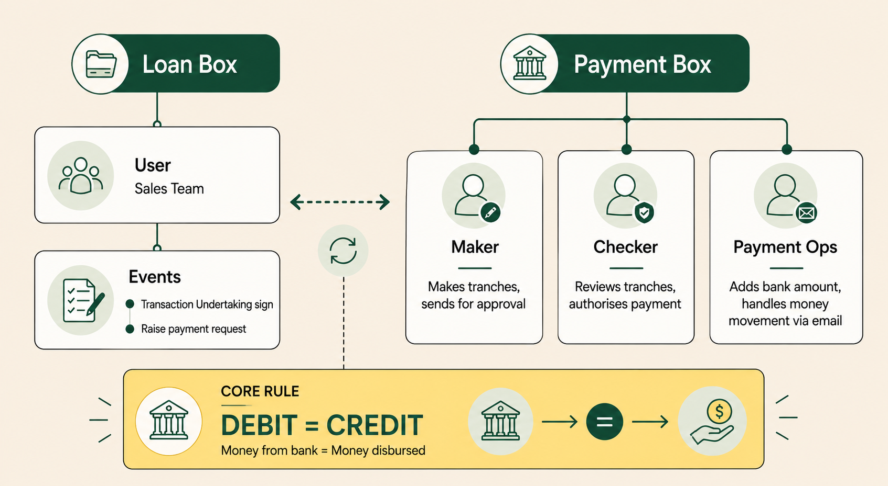
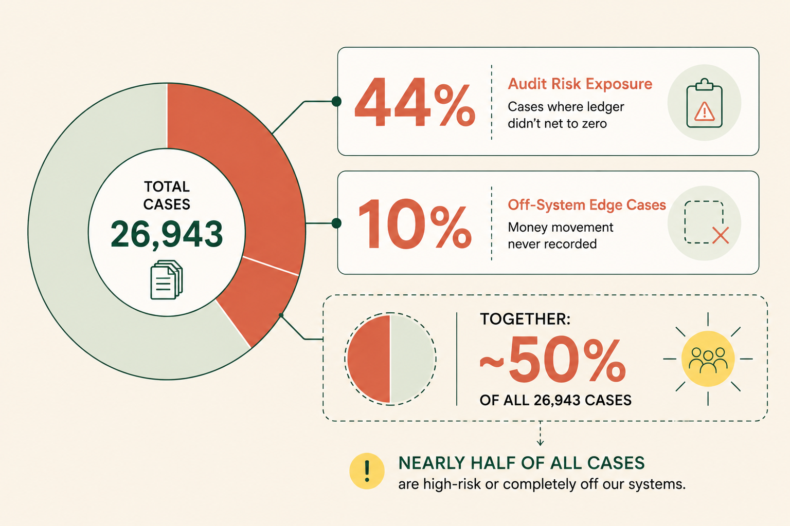
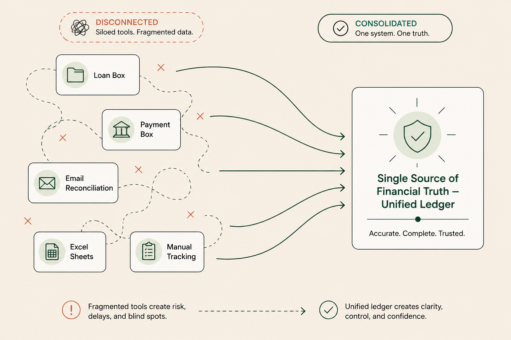

Designed a unified real-time ledger for CarDekho Financial Services, replacing five disconnected tools and weeks of manual reconciliation with one immutable, audit-ready record per lending case.
Role
Product Designer (UX + Research)
Company
CarDekho Financial Services · Rupyy
Product
PAYMENT BOX Pro · Ledger System
Scope
1 year · regulatory deadline
Tools
Figma · FigJam · Whimsical
Year
2025
TL;DR
When precision is the constraint, systems design is the solution. The product team was managing crores of rupees in vehicle loans across five disconnected tools, with no single source of truth, no audit trail, and reconciliation buried in Excel. I designed PAYMENT BOX Pro's Ledger System: one immutable, state-machine-driven record per case, where every transaction is timestamped, locked, and traceable. The principle: in systems where compliance matters, the data model is the design. Outcome: reconciliation moved from a month-end ritual to a real-time signal.
Systems design is about making order legible: turning scattered tools and silent risk into one source of truth.
01 · The problem
Five systems. Zero truth.
CarDekho Financial Services processes vehicle loans across thousands of live cases, disbursing funds in parallel to dealers, customers, and RTOs. The financial picture of any single case lived across five disconnected systems: transactions in one tool, invoicing in another, tax in a third, MRTB (money returned to bank) in an email thread, reprocessing in a spreadsheet.
The downstream consequences were not small. Auditors couldn't verify case closure. Ops lived in Excel. Finance reconciled monthly, by hand. Ledgers occasionally failed to net zero, a direct audit exposure.

The ecosystem before design: two systems, three roles, one rule: for every case, debit must equal credit. Mapping this revealed where the truth was getting lost.
Before
After
✕ Five tools for transactions, invoicing, and tax; none reconciled
✓ One immutable ledger per case; every rupee captured
✕ Weekly manual Excel reconciliation
✓ Auto-reconciliation; exceptions alerted only
✕ Ledgers sometimes failing to net zero (audit exposure)
✓ System-enforced net-zero before case lock
✕ MRTB and reprocessing handled via email
✓ Eleven structured edge-case flows
✕ No signal for case-closure eligibility
✓ Full timestamped audit trail with ERP sync
Who paid the price
PO
Payment Ops · Disbursements, Settlements
Reactive, not proactive
No failure notifications; discoveries happened days after the event
Manual MRTB and reprocessing reconciliation through email threads
No system signal on case-closure readiness
FT
Finance Team · Revenue, Invoicing
Truth, monthly
Manual invoice generation each month via Excel
Revenue mismatches across systems with no single source
Ledger and Oracle balances drifted with no reconciliation path
AU
Auditors · Compliance, Validation
Verification by archaeology
ERP balance ≠ ledger balance, with no path to reconcile
Couldn't confirm cases net to zero at closure
No traceability for which transactions were reversed, corrected, or why
Two problems, one root cause
Audit Risk
Ledger balance does not settle to zero in Payment Box cases, creating debit-credit mismatches and increasing audit exposure.
Manual Reconciliation
Payment Ops teams reconcile cases manually through email, resulting in no system trail, limited visibility, and higher risk of errors.
Root cause
No unified financial record: no single source of truth per case capturing all money movements. The result: non-net-zero ledgers, manual reconciliation, and elevated audit & compliance risk.
Case Closure & Immutability
A case is only closed when the ledger nets to zero.
Ledger-Derived Invoicing
Every invoice is generated directly from ledger entries.
Two surface problems traced to one root cause, then an approach built on three structural principles.

The problem, quantified: across 26,943 cases, 44% carried audit risk and 10% lived entirely off-system. Together, nearly half of all transactions, which made a unified ledger a systemic necessity.
The work was not to redesign an interface. It was to redesign the system underneath the interface.
02 · The North Star
One metric to disagree under.
Before I opened Figma, I argued for a single North Star metric the team would commit to. The argument was structural: a case that closes wrong creates both audit exposure and revenue leakage. Any dip in this metric is a direct financial-risk signal, not just an ops lag. And in scope debates, of which there were many, every feature could be evaluated against a single criterion.
★ North Star Metric
Financial Case Closure Rate
The percentage of cases that close with a verified net-zero balance, complete Oracle sync, and zero post-closure corrections.
3
Personas, one data model
5 → 1
Tools unified into one view
11
Edge flows designed
0
Manual steps, happy path
03 · The solution
Two views, one data model.
The system serves the same underlying ledger through two complementary views: one for the case, one for the portfolio.

The shift: five disconnected tools collapsed into a single immutable ledger: accurate, complete, and trusted.
Case-Level View: Financial Timeline
Inside every case in PAYMENT BOX Pro, a Ledger Summary tab. Every credit, debit, UTR, and Oracle sync status: chronological, timestamped, immutable. Click any tranche for full state history in a side panel.
Oracle Sync ✓Net Balance · ₹ 0.00 · Net Zero ✓ · Locked
Fig. 01 · Case-level ledger summary. Every transaction is timestamped, immutable, and signed off by a single net-zero check before lock.
Global View: Portfolio-Wide Dashboard
A separate destination in PAYMENT BOX Pro. Every case's financial status in one place. Quick Action tabs surface exceptions instantly, reducing exception detection from month-end to real-time.
PAYMENT BOX ProGlobal Ledger View
Live · 142 active cases
All Cases
Oracle Sync Failed 3
TU Mismatch 1
MRTB 2
Failed
Case
Last activity
Status
Note
CDF 2847
13 Jan
Locked ✓
Finance Admin: Priya S.
CDF 2901
14 Jan
Pending
Awaiting final tranche settlement
CDF 2956
15 Jan
Sync Fail
⚠ Oracle Sync Failed · action required
CDF 3014
15 Jan
TU Mismatch
TU resigned · non-terminal tranches updated
Fig. 02 · Portfolio-wide view. Quick Action tabs surface exceptions in real time; what used to take a month-end reconciliation now takes one glance.
The ledger state machine
The ledger's spine is a state machine. Every tranche moves through a defined lifecycle: Pending → Settlement → Settled → Posted → Locked, with terminal branches for Cancelled and Failed. Terminal states are immutable. Corrections are new entries, never edits. Case lock requires all five closure conditions simultaneously: net balance zero, ERP synced, no pending tranches, no open exceptions, no Oracle mismatch.
The rule A case can only lock when the ledger nets to zero.
PendingMaker initiates
→
SettlementAwaiting UTR
→
SettledUTR received
→
PostedTU signed
From Posted, three routes
Ledger nets to zero
↓
Case Locked
Terminal · goal
Immutable. The only state in which a case closes.
Cancelled
↓
Reversal Entry
A new correcting entry, never a silent edit.
Failed
↓
Reprocessing
Loops back to Settlement. Never reaches a locked case.
Failed ≠ Reprocessing. A failed transaction reprocesses; it never silently reaches a locked case. Conflating the two triggers the wrong Ops response every time.
The most important design call inside the state machine was separating FAILED from REPROCESSING.
FAILED means the UTR was never generated. The bank rejected the transaction at the rail layer. REPROCESSING means a UTR was generated, but the money was reversed using the same UTR, common with government banks and locked NRI accounts.
Semantically distinct failure modes. Conflating them would trigger the wrong Ops response every single time. A small design call with large operational consequences.
04 · Key decisions
What I chose, and what I gave up.
Every important design decision is a trade. Here are the four I'd defend in any review.
Immutability over editability.
Every correction is a new reversal entry. The audit trail is always complete and unbroken. No silent edits, no untraceable adjustments.
Gave upSimpler UX. Ops would have preferred to "just edit the number."
Event-driven default, manual as exception.
Manual entry is a gated edge-case path with HoD approval, not a shortcut that bypasses system logic and creates untraceable entries.
Gave upOps flexibility. Some flows became four clicks where they had been one.
One data model, three persona-specific views.
Same underlying numbers, three presentations. Ops, Finance, and Audit all trust the same source, because separate systems were the original problem.
Gave upFaster per-team build. Each persona would have shipped quicker with a siloed tool. We had been there before.
Invoice automation deferred to Phase 2.
One-year regulatory deadline. Core ledger and audit trail ship first. The data model already supports invoicing; Phase 2 is execution, not design.
Gave upFull Finance-team relief on launch day.
How I owned this, month by month
1
Month 1
Understanding the ecosystem
Built a deep understanding of CTS workflows and mapped the flowchart
Ran stakeholder interviews with Payment Ops & Finance to surface SOPs and pain points
Developed a ground-up view of the existing problem landscape
2
Month 2
Designing the ledger framework
Identified key financial events and their trigger points across the lending journey
Defined state-transition rules and case-closure logic for ledger balancing
Drafted the first-ever Success Flow for the ledger
3
Month 3
Refining through insights
Held deep-dives with the Ops team to uncover edge cases
Prioritised edge cases by volume and built flows for each scenario
Proposed actionables for quick identification of stuck or problematic cases
4
Month 4
Building for handoff
Created end-to-end workflow diagrams covering all scenarios
Developed happy-flow and sad-flow prototypes for the ledger lifecycle
Authored the PRD for engineering handoff
From ecosystem research to PRD authoring: owned end to end, across four months.
05 · Edge cases
Where the real design lived.
In financial ops, edge cases are not edge cases. They are operationally frequent. I designed eleven flows. The four with the most design complexity, each one replacing an email chain with a structured system path:
MRTB: Money Returned to Bank
Manual Entry
Triggered when money is disbursed but a case is cancelled and funds must be returned. Previously: untracked email chain.
Ops posts a Case_Cancelled event, then a Back_to_Bank entry with supporting documents attached. Case lock requires last event = Back_to_Bank AND actual balance = ₹0.00. Both conditions must be true.
Reprocessing: Same-UTR Reversal
Semi-Automated
Triggered when a UTR is received but the transaction reverses with the same UTR, common with government banks and NRI/locked accounts.
Ops selects the returned entry; a hover-board reveals a Return CTA, and a correction panel opens inline. If the entry has already been Oracle-synced, a ticket-raise option surfaces instead, with the 1 to 2 day sync delay built into the UX expectation.
TU Resign: Mid-Case Change
Auto-Update
Triggered when a Transaction Undertaking is re-signed. For example, payment method changes from e-cheque to NEFT, or the tranche amount is revised.
The system auto-updates all non-terminal tranches to match the new TU values. If a settled tranche mismatches the new TU, the case is tagged TU Mismatch in the Global View Quick Action tab for Ops triage.
DD Cancellation: Offline Payment
CSV Upload
Triggered when a Demand Draft is cancelled, requiring a physical authority letter to the bank.
Ops uploads a CSV batch via a dedicated panel in PAYMENT BOX Pro. Status auto-updates to DD CANCEL. The hoverboard tracks upload timestamps and case counts. Full audit trail is created without manual per-case entry.
06 · Impact
Before and after.
The shift: current state → future state
Dimension
Current state
Future state
Audit Risk
44% of cases have non-zero ledger balance
85 to 90% of cases close with a balanced, audit-ready ledger, backed by ERP/Oracle sync
Manual Reconciliation
10% of cases reconciled entirely over email, with no system trail
Phase 1: edge cases scoped with audit-ready solutions · Phase 2: remaining solutions deployed with minimal manual intervention
Financial Traceability
No chronological record of money movement within a case
Every entry's full lifecycle visible in Case View with UTR and supporting docs, all time-ordered
Visibility
No unified view of case health
Global View: all cases with lock/unlock status, settled entries, advanced filters, one-click actions
Proactive Resolution
No way to identify stuck or at-risk cases without manual work
Case sub-status tags flag cases, proactively alerting stakeholders to act
North Star metric% of cases locked within 3 months of disbursal
Supporting metric% of cases closed without manual touch
Five dimensions, each moved from reactive and invisible to proactive and audit-ready.
Operational metrics, in detail
Metric
Before
After
Reconciliation rate
Couldn't be tracked
95%+ target, auto-close on happy path
Manual Ops time
Hours per week on Excel
Near-zero on standard cases
Audit trail
Across 5 systems
100% immutable, per-entry, single source
Discrepancy detection
Weeks of lag; month-end discovery
Real-time; surfaced in Quick Action tab
Edge-case resolution
Multi-day email chains
Structured flows, approval-gated
07 · What I'd do differently
The honest version.
Quantify earlier. Pain was documented qualitatively. I should have insisted on weekly Ops-hour baselines from day one. The qualitative story was strong; the quantitative story would have shortened scope debates considerably.
Push invoice automation harder. I treated the regulatory deadline as a constraint to respect. In hindsight, the data-model groundwork meant Phase 2 was small enough to fit inside Phase 1, and the Finance team would have benefited from the relief at launch.
Louder version control on the data model. The data model went through several iterations during design. I documented decisions in FigJam but not as cleanly as I'd want a future designer to inherit. Documentation discipline upstream of Figma is a habit I'm still building.
08 · Reflection
In fintech, precision is its own UX. Every field name, every state label, every permission carries operational and compliance consequence. There is no decorative layer.
I learned that the most important design work happens before pixels. The state machine in Whimsical forced clarity that no amount of Figma iteration would have surfaced. Every screen on PAYMENT BOX Pro Ledger has a defensible reason to exist, not because the layout is right, but because the structure underneath is right.
Team: Product Manager · Two Engineering Managers · Ops + Finance stakeholders. My ownership: UX architecture, state-machine design, all eleven edge-case flows, persona-view definitions, design-system contributions, research synthesis with Ops + Finance.